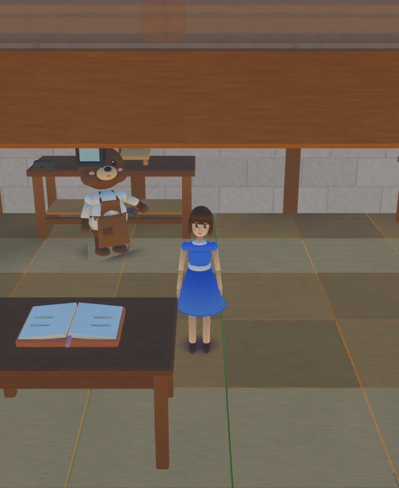
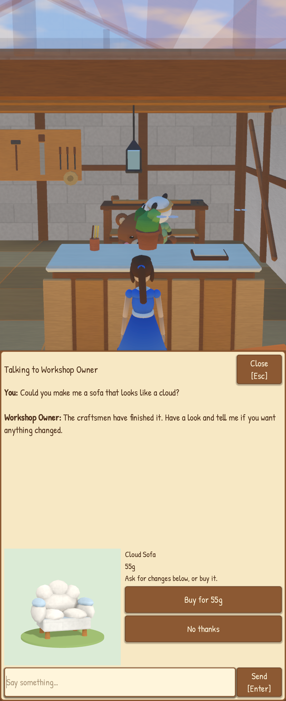
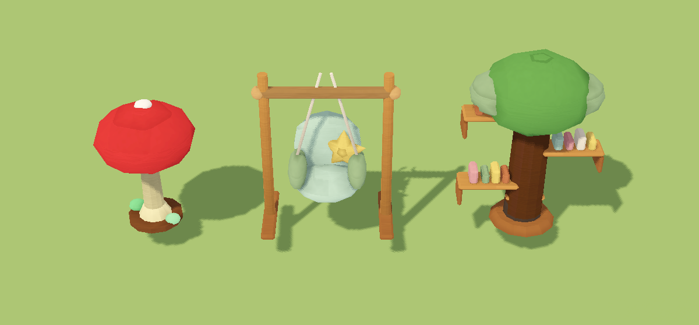
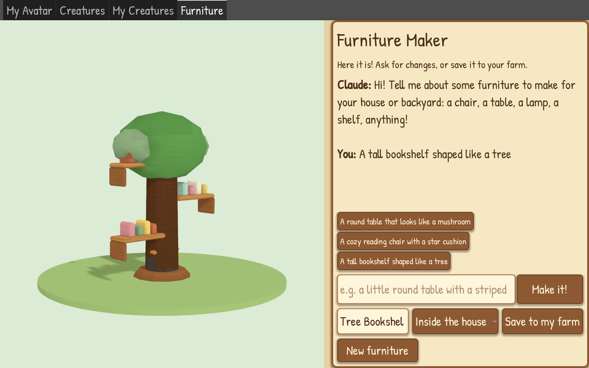

What happens when you ask for a "cloud-shaped sofa"
The bear who used to run the upgrade stall now has a whole workshop, with two craftsmen hammering and sawing at the back (they look up and wave when you walk past, which is very polite of them).
You ask the owner
chat · ClaudeYou just describe it in the chat. He's a villager, so Claude is doing his talking, and it decides your request counts as a commission.

Claude turns words into a recipe
furniture designer promptA second Claude, the furniture designer, writes a recipe for the piece: which boxes, cylinders and spheres go where, how big, which colours. Basically LEGO instructions.
Blender builds it on the iMac
Farm Host → iMac workshop → BlenderThe Farm Host on our NAS passes the recipe to the iMac, where Blender builds a real 3D model from it. If the iMac is off, the owner says his craftsmen are busy and only sells what's in stock. Very realistic, honestly.
Buy it (or don't)
Buy · No thanksYou get the price and a Buy button. If you buy it, it goes into your bag, and it joins the workshop catalogue so other people can buy one too. Custom pieces are half price now, because I said the first prices were daylight robbery.

The catalogue
on the table inside the workshopInside the workshop there's a catalogue on the table: one piece at a time on a turntable, Previous, Next, Buy. The roof goes see-through while you're inside so you can actually see.

Maker Studio (the grown-up version)
There's also a separate app on the iMac called Maker Studio with the same trick for bigger jobs: a Furniture Maker and a creature maker. You describe it, Claude designs it, Blender builds it, it shows up on a turntable, and you press Save. That's where Mittens and Star came from.
